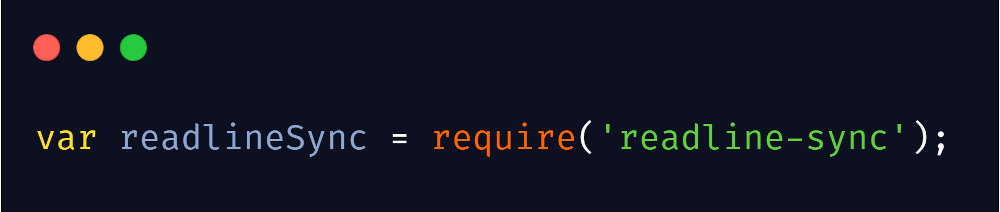
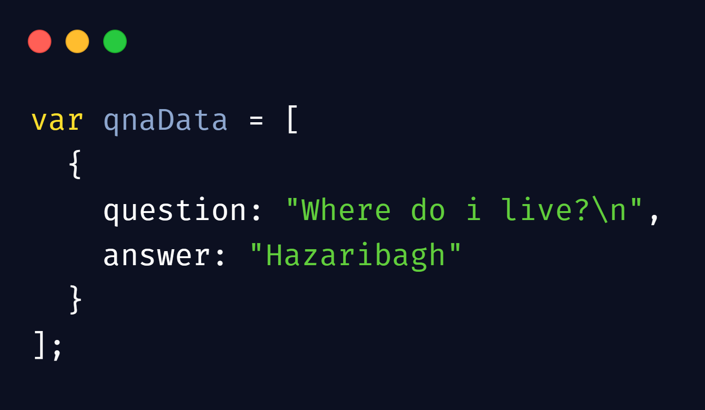
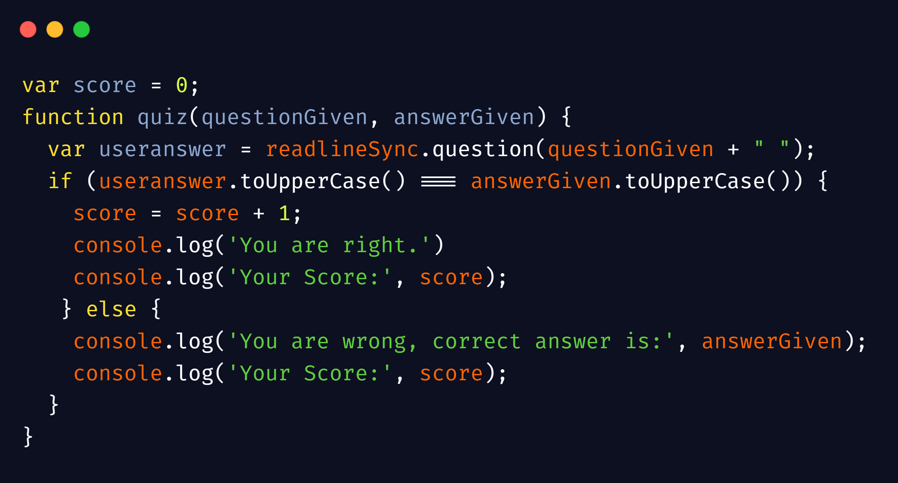

Build Your First CLI Application

First mkdir will create a directory/folder with the name cli-app, then cd will direct you into the folder where touch index.js (or notepad index.js in cmd) will create a javascript file.
NPM is package manager for javascript language, it is default package manager that comes with nodejs.
Readline-sync is a module that interacts synchronously with the user, bascially it takes input from the user through console.
We need to include those modules that we have installed earlier, to include we use 'require()' function.
By assigning to a variable globally we can use the benefits of the modules anywhere in our program.
Taking the user input and storing the value into the variable. Here userName is storing the user respone asked by the readlineSync.question() method.
Create an array of objects as its elements. Object should have two properties, one for question and one for answer. Create as many questions as you want inside the array.
Now, declare a variable to store the score of the user and also create a function having two parameters. Inside the function we will ask the user a question and take the response as an answer and store it into a variable. Then, check the user answer with your given answer using if else and if the answer is correct then add the score by 1 and show the score and if the user answer is wrong show the score and the correct answer using console.log().
Using for loop iterate over the array and grap the questions and answers from the objects using dot notation then store it into a variable,
here the variables are the parameters of the function which is being called inside the for loop. The function that we are calling here is the
same function that we created in step 4 so it will show the user one question then the user will answer the question the answer will be checked
and the message will be displayed and then it will move to the second question.
As soon as the for loop reaches the last question(the last element of the array) it will show the user his/her final score,
to check when the user reaches the last element use if conditional statement and the condition will ckeck if 'i' is equal to the length of the array
which means that the for loop is complete and now its time to show the final score of the user.
Congratulations, you have made your first CLI application.
You can get the full code on my Github Repository.
You can add more functionlaty like a scoreboard and can also use modules like Chalk-Its a library that styles the string/text of the console.
I hope it will help you, if you have any problem in this then please contact me i will be happy to help you.
Happy Coding 😄.